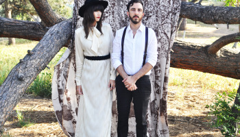

Big Harp
is the renown project of married duo Stefanie and Chris Senseney (who
recently added drummer Daniel Ocanto to the official lineup). After
releasing two albums of Americana indie rock via Saddle Creek (which they claim are in no way sonically “related to each other”), the Valley-based band decided to continue their diverse streak by dropping a new album, Waveless, via Majestic Litter. Featuring recording help from John Congleton (St. Vincent, Two Gallants),
the result is eleven “delightful blasts of thrash pop radness” with
coalescing coed harmonies such as on their latest fuzzy single “Diev”:
Big Harp will perform on October 3rd at the Bootleg Theater.
Big Harp: Website, Facebook, Twitter, Instagram, Soundcloud
Related
It's
been long, far too long... five years to be exact since San Francisco's
bearded man-duo known as Two Gallants have blessed us with another
album of gritty rock filled with gold rush nostalgia and eerie tales. No
longer on their traditional Omaha-based record label Saddle Creek, the
band switched…
August 9, 2012
In "Gritty Indie Rock"
Echo
Park's In The Valley Below makes somber indie rock by merging
melancholy melody with hushed beats. The ambiguously married duet
are/were members of the shred rock outfit Sabrosa Purr and now
apparently prefer to dress like tent revival patrons. Their self-titled
EP was mixed by John Congleton (Two Gallants, St. Vincent) and…
July 10, 2012
In "Somber Indie Pop Rock"
Glassell
Park's Viva Violet is the new project of old friends Jiha Lee
(formerly of The Good Life) and Nick White (of Tilly and the Wall) who
are both Bright Eyes alumni (and thus part of the Saddle Creek
retinue). Will Golden produced their forthcoming self-titled debut EP
which includes "Move": a beautiful…
February 20, 2015
In "Melodic Indie Rock"

{kind=link}
{kind=link}